Design System
UA Baselayer — Unifying the product with a brand-right design system
Establish a scalable design system that brings multiple Under Armour digital products under one brand — giving the Focused Performer a true performance experience.
Background
Starting with 10+ years of design debt
After 10+ years on the market, MapMyRun was barely holding itself together with a decaying tech stack and a myriad of mismatched app experiences — none of which really aligned with the Under Armour brand. Multiple surveys over the years made it clear there was a distinct disconnect between the fitness-tracking apps we owned and Under Armour as a whole.
Engineering teams started planning to completely overhaul the tech stack — ripping out old unused code, rebuilding databases from the ground up, and optimizing the overall responsiveness of the app. Our design team took this opportunity to give the app a complete visual refresh and increase brand affinity.
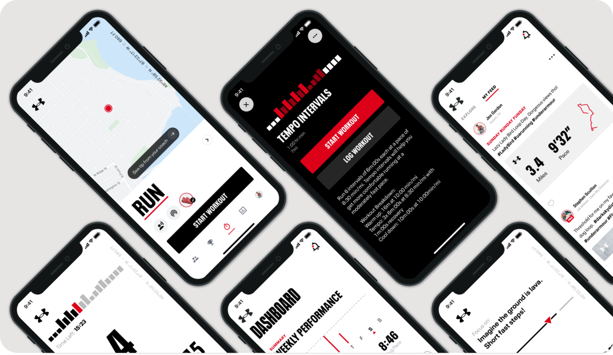
Setting the direction — Visual Refresh
Vision
Visioning for UA MapMyRun
Our goal was to envision what a true Under Armour running app could feel like, elevating the existing product features into a true performance and coaching service. Our 3–5 year plan was to shift MapMyRun from a casual consumer-level run tracking app into an essential tool for our core audience — the "Focused Performer". Tracking your activity was only a small part of the experience; the true value came in the analysis, insights and coaching we offered.
After months of iterating and testing new visual and UX directions, we landed on some key themes, leveraging Under Armour's well-established brand guidelines into a comprehensive visual language for digital products. We decided it was time for a true Design System — one that would embody the Under Armour brand through the interface and scale across multiple digital products, from web to wearables. We dusted off an old attempt at a styleguide called Baselayer and pivoted it into a foundational design system.
Principles
Let's establish some principles
Principles keep a project focused, aligned and on-track. We established some basic ones right away and adapted them as we went:
Start with system components. Material Design and HIG as the basis for surface-level components and interactions. Introduce custom components at brand-specific touchpoints only.
Keep the Focused Performer at the forefront. Everything we did had to, at the very least, not disrupt the progress any of our users had made in their fitness journey. We couldn't overhaul a critical training feature in the middle of a runner's couch-to-5k efforts. Our visual changes had to enhance them — elevating the truly important parts through larger, bolder, more prominent elements like training stats and graphs.
Introduce branded moments at key points. We had to be a conduit into the brand team to truly position MapMyRun as an extension of the brand — carefully crafting or selecting imagery and styles that connected the two entities. We created branded components that supported campaigns, so the aesthetic you saw in the app matched what you encountered in the stores.
Typography
Tidying up existing font styles
Under Armour's official font is Neue Plak UA — a custom version of Neue Plak. We were already using a variation fine-tuned to our mobile app interface, but we kept seeing visual discrepancies. I dug in with engineers to identify the source of the issues and fix them once and for all.
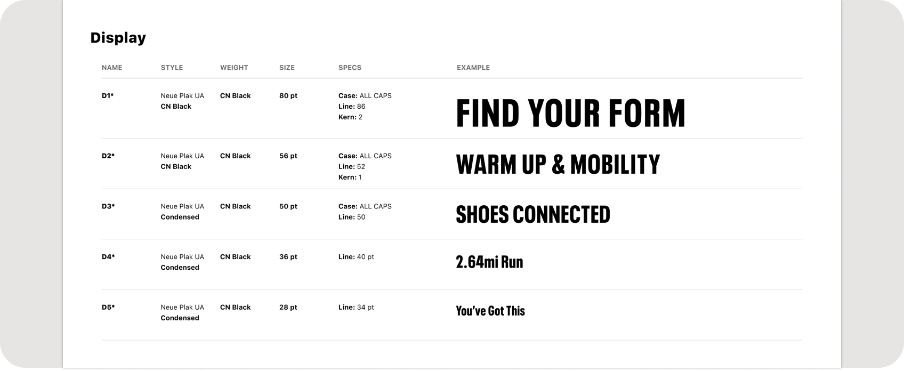
Font styles for MapMyRun
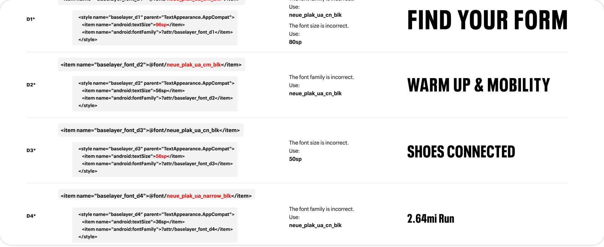
Fixing discrepancies in the code
Color
Consolidating the colors
Possibly our biggest change was deciding to ditch the MapMyRun Blue. It wasn't easy to say goodbye to a color strategy that played a big role in the overall earlier success of the MapMyFitness suite of apps — but it was clearly a necessity to achieve our goal of bringing the apps into the Under Armour brand.
Under Armour's brand palette was primarily shades of grey with a solid black and white at either end. The only interesting brand color we had to work with was red — and given the negative connotations of a red UI element, we had to be incredibly intentional about when and where we used it. I began reorganizing our color palettes into intentional uses, establishing a new UA Digital family of colors that would eventually complement and support the primary brand palette.
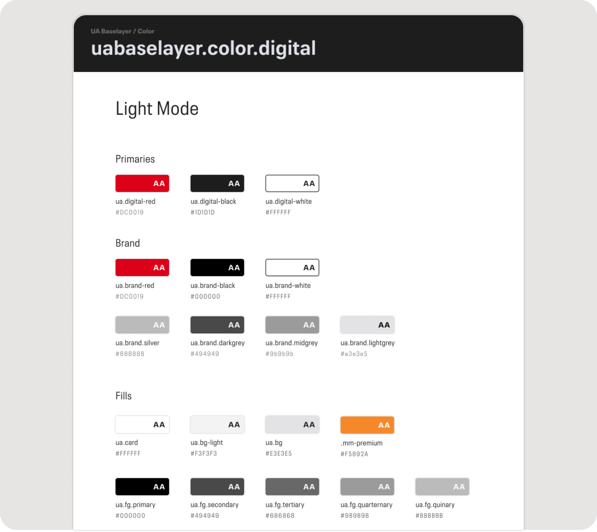
Separating and organizing colors by application — a WIP that never got to its final stages
Components
Building the component library
Following our principle of adhering to system-level basics, we built out components that felt natural in their given platform but also clearly an Under Armour asset — using brand fonts and colors, and leveraging brand imagery when possible. This made a clear and distinct connection between the app and all the other campaign materials Under Armour would produce.
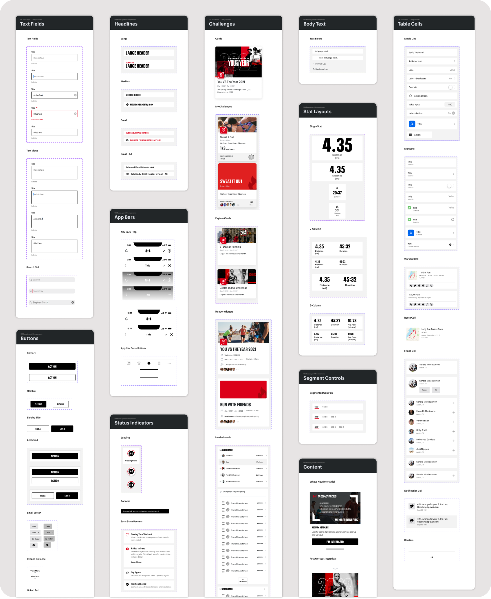
Snapshot of the Baselayer component library
File Resources
Our design system had its own design system
Including helpful resources that kept our files clean, organized and consistent. I created a set of spec elements for VQA purposes — useful file markup components, all auto-layout'd, along with detailed layout and behaviour specs.
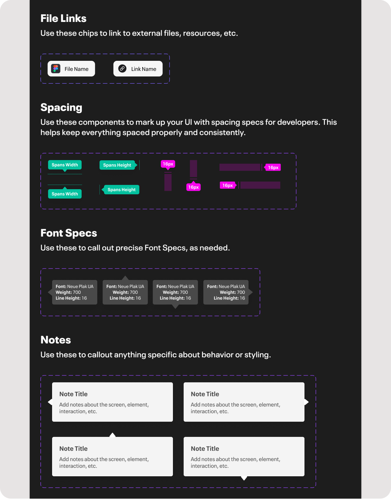
Useful file markup components, all auto-layout'd
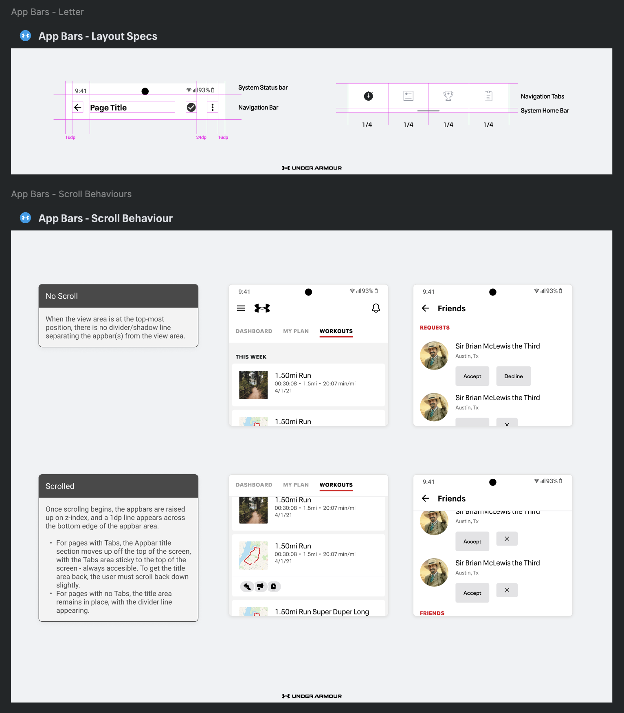
Detailed layout and behaviour specs
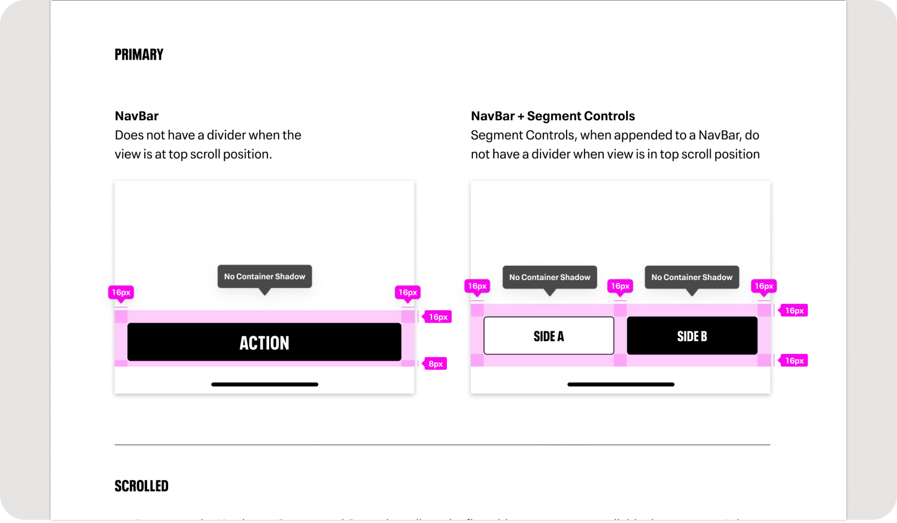
Spec documentation
File Structure
Keeping the end users in mind
One of my personal principles while building Baselayer was to keep the end users of the system — our design team — in mind. I would regularly check in with the team to make sure everything was working as expected, tweaking the file structure and organizing elements in a logical manner that allowed for quick search and placement by my teammates.
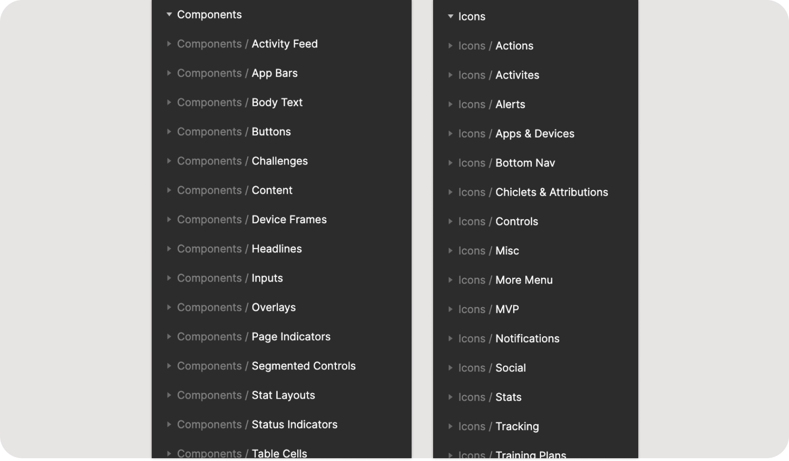
File organization for end users of the library
Outcome
Bringing it to life
We worked closely with product, project and engineering teams to bring UA Baselayer to life using a phased, targeted approach that updated key features with minimal disruption to the overall experience. Any desired UX updates were carefully vetted and conservatively implemented — keeping the app familiar to our users and avoiding the typical backlash against major app updates.
We rolled out changes over about 6 months, combining efforts with the code cleanup projects taking place across our infrastructure. The first success came when an engineer found a sub-screen not included in our design documents and was able to apply the new components without needing a fully spec'd design file — revealing the true potential of a full design system: build and ship quality, on-brand interfaces faster.
A more impactful success came with our Friend Challenges feature. Engineering had subcontracted a codebase revamp and the result was an even worse experience — mismatched fonts, misaligned margins, incorrect colors. Lucky for us, most components were already built and we could simply swap out the chaotic custom-coded versions for the new Baselayer elements. A visual refresh that would have taken multiple sprints of back-and-forth now took a week.
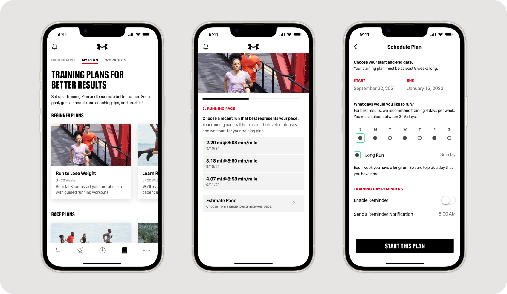
Updated Training Plans feature
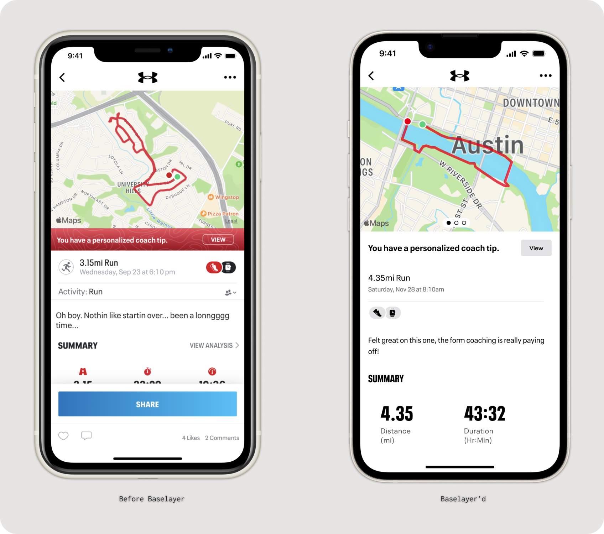
Updated Workout Details screen
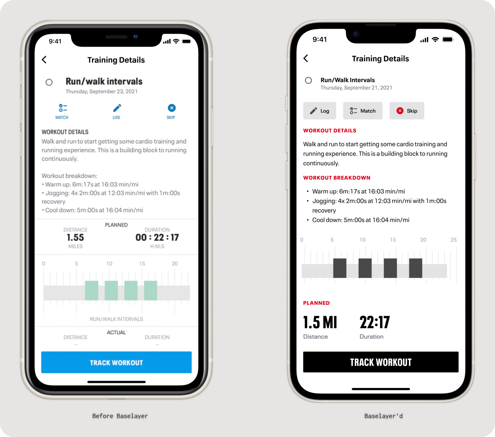
Updated Training Plan details